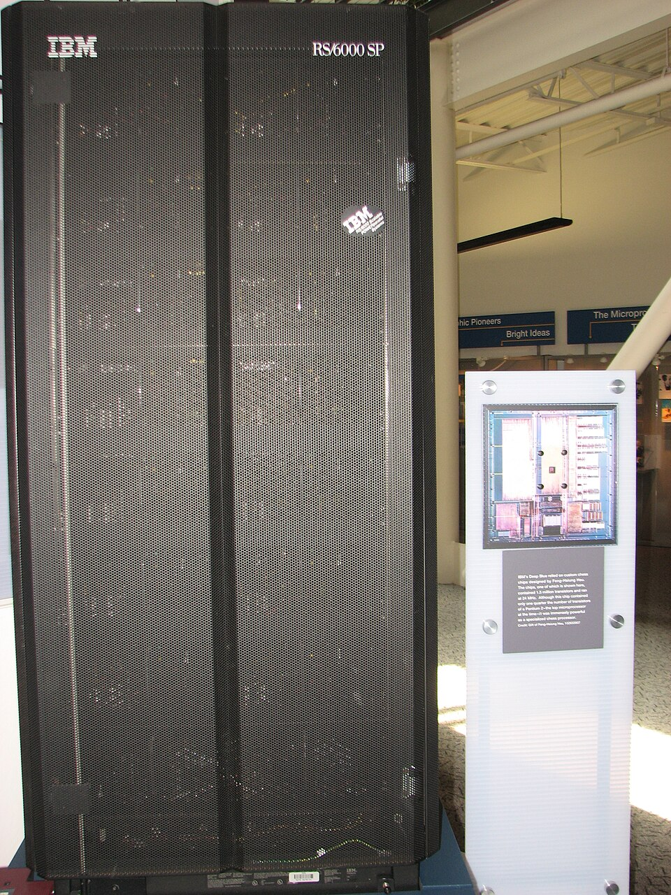
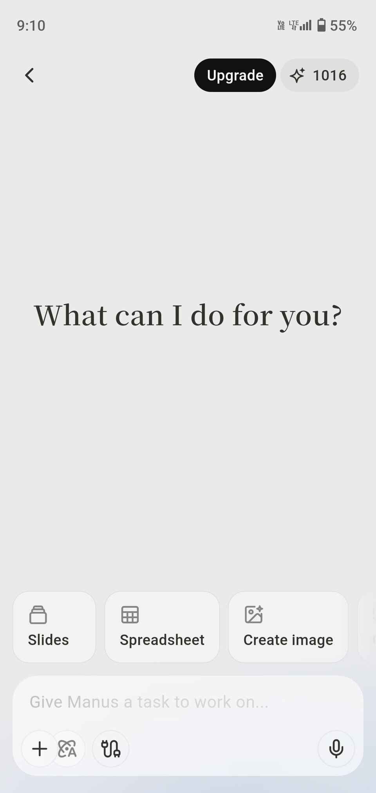
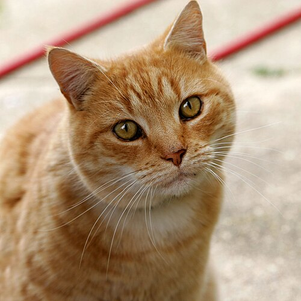
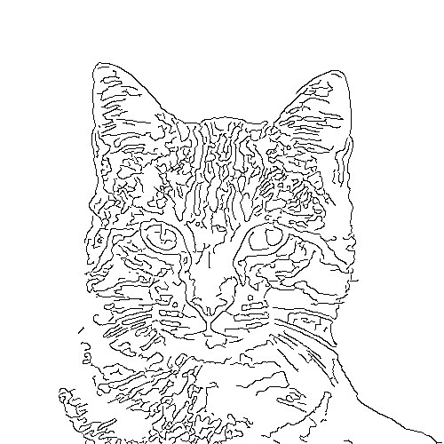
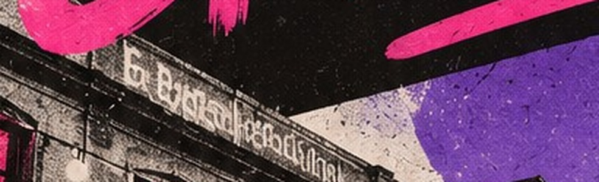

Ce qu'elle est, d'où elle vient, comment elle apprend
04
Impacts et enjeux
Ce qu'elle change pour nous et pour la société
02
L'IA dans notre quotidien
Là où on la croise déjà, souvent sans le savoir
05
Bonnes pratiques
Les bons réflexes pour bien s'en servir
03
L'IA en pratique
Des démonstrations, en direct
06
Et demain ?
Ce qui nous attend… et un temps d'échange
Pour commencer
Levez la main — il n'y a pas de mauvaise réponse !
Qui a déjà utilisé ChatGPT ou une autre IA ?
Qui s'en sert au moins une fois par semaine ?
Qui s'en méfie un peu… ou beaucoup ?
01 · Définition
Percevoirvoir, entendre, lire son environnement
Apprendres'améliorer à partir d'exemples
Déciderchoisir une action pour atteindre un but
La définition officielle
L'IA désigne la possibilité pour une machine de reproduire des comportements liés aux humains, tels que le raisonnement, la planification et la créativité.
Source : Parlement européen, « Intelligence artificielle : définition et utilisation », europarl.europa.eu (mis à jour le 20/06/2023)
01 · Histoire
1950
Alan Turing
« Une machine peut-elle penser ? »
1956
Le nom
John McCarthy invente « intelligence artificielle »
1997

Deep Blue
Bat le champion du monde d'échecs
2012
Le deep learning
Les machines apprennent à voir
2022
ChatGPT
L'IA devient accessible à tous
2025

Les agents
L'IA agit seule pour vous
Images Wikimedia Commons : A. Turing, Elliott & Fry, 1951 (domaine public) · J. McCarthy, « null0 », CC BY-SA 2.0 · Deep Blue, Erik Pitti, CC BY 2.0 · G. Hinton, Arthur Petron, CC BY-SA 4.0 · logo ChatGPT, OpenAI · agent Manus, capture d'écran (domaine public)
01 · Fonctionnement
Elle apprend par l'exemple, pas par des règles
Avant
On écrivait chaque règle à la main
SI 2 oreilles pointues ET des moustaches ET 4 pattes ALORS c'est un chat
Un chat de dos, dans le noir, à moitié caché ?
Maintenant
Elle observe des milliers d'exemples et en déduit les règles
chatpas chatchat

chat
… × des milliers d'exemples
Photos Wikimedia Commons : chat tigré, Alvesgaspar, CC BY-SA 3.0 · chat dans la neige, Von.grzanka, CC BY-SA 3.0 · chat roux, Fir0002, GFDL 1.2 · golden retriever, J. Vreugdenhil / A. Friedrich, domaine public
01 · Fonctionnement
Des couches inspirées du cerveau
Chaque couche repère des détails de plus en plus complexes, jusqu'à reconnaître l'ensemble.
Au départLa photo
→

Couche 1Les contours
→
Couche 2Des formes
→
Couche 3Des morceaux
→
C'est un chat !
RésultatReconnu
Photo : chat tigré, Alvesgaspar, Wikimedia Commons, CC BY-SA 3.0 · contours calculés automatiquement à partir de la photo ; formes et morceaux schématisés pour l'illustration
01 · Fonctionnement
Elle prédit le mot le plus probable
« Le chat est sur le ? »
Ce que la machine envisage
Chiffres donnés à titre d'exemple
tapis
41 %
canapé
23 %
toit
14 %
lit
9 %
rebord
5 %
Elle tire au sort en favorisant les mots les plus probables : la même question peut donner des réponses différentes.
01 · Fonctionnement
Elle ne lit pas des mots, mais des « tokens »
« Bonjour à tous »→Bonjour à tous
↓[ 38, 9247, 1225, 14315 ]
01 · Fonctionnement
1
Elle lit
Des milliards de textes
→
2
On la corrige
Des humains notent ses réponses
Photos Wikimedia Commons : Long Room, Trinity College Dublin, David Iliff (Diliff), CC BY-SA 4.0 · texte corrigé à la main, Phoebe, CC BY-SA 3.0
01 · Fonctionnement
Génératives
ChatGPT, Midjourney
Perceptives
Face ID, Siri
Prédictives
Netflix, la météo
Le plus récent
Agentives
Elles agissent à votre place
02
Chapitre 02
L'IA dans notre quotidien
Sans le savoirQuiz : IA ou pas ?Tous les métiers
02 · Quotidien
Matin
Trajet
Journée
Smartphone
Travail
Messagerie
Soirée
Achats
Et vous, combien en avez-vous croisé aujourd'hui ?
02 · Quiz
IA ou pas IA ?
01
Une calculatrice
02
Les sous-titres automatiques
03
Une machine à laver « intelligente »
04
Le parking sans ticket
02 · Secteurs
Santé
Lire les radios
Éducation
Exercices sur mesure
Agriculture
Surveiller les cultures
Industrie
Prévoir les pannes
Transport
Freinage d'urgence
Culture
Images et musique
02 · Exemples
Les protéines
Un prix Nobel en 2024
Trier les déchets
Des robots trieurs
Traduire en direct
Chacun parle sa langue
03
Chapitre 03
L'IA en pratique
6 démos en directHumain ou IA ?
04
Chapitre 04
Impacts et enjeux
Ce qu'elle apporteCe qu'elle coûteQui fixe les règles
04 · Ce qu'elle apporte · Du temps
Ce qui prenait une heure… prend une minute.
Un e-mail délicat
Sans IA15 min
Avec IA10 s
Un tableau de budget
Sans IA1 h
Avec IA1 min
Le premier jet d'une affiche
Sans IA1 h
Avec IA30 s
En France, 2026
2 entreprises sur 3 l'utilisent déjà…
…mais 1 sur 3 seulement en voit déjà le gain.
Durées : ordres de grandeur d'après nos démos, barres à la même échelle. Entreprises de 20 salariés et plus : Banque de France, enquête 2026 (67 % l'utilisent, 31 % des utilisatrices constatent un gain de productivité).
04 · Ce qu'elle apporte · Des découvertes
Et surtout… elle voit ce qu'on ne voyait pas.
Santé · Suède, 2025
+29 %
de cancers du sein détectés au dépistage, avec l'IA aux côtés des radiologues
Agriculture · 2024
−87 %
d'herbicide : des caméras repèrent chaque mauvaise herbe et ne traitent qu'elle
Médicaments · MIT, 2025
Des millions
de molécules imaginées par une IA… dont de nouveaux antibiotiques contre des bactéries résistantes
Parole · Californie, 2025
18 ans
de silence : une femme paralysée parle à nouveau, avec sa propre voix, grâce à un implant et une IA
Sources : essai MASAI, The Lancet Digital Health (2025) · Université du Nebraska-Lincoln, essai du pulvérisateur Greeneye (2024) · Collins et al., Cell (août 2025) · UC Berkeley et UCSF, Nature Neuroscience (mars 2025).
04 · Ce qu'elle coûte · La planète
Retournons la pièce… tout ça a un prix.
L'électricité consommée par les datacenters dans le monde
2024
415 TWh
2030prévision
945 TWh
Plus du double en 6 ans : un peu plus que toute la consommation électrique du Japon.
Et de l'eau
beaucoup d'eau pour refroidir ces machines, jour et nuit.
Le bon réflexe : une image ou une vidéo consomme bien plus qu'une simple question.
Source : Agence internationale de l'énergie, « Energy and AI » (avril 2025). Barres à la même échelle.
04 · Ce qu'elle coûte · Nos portefeuilles
Une course à l'argent… que nous payons aussi.
Les géants, 2026
2 milliards $
par jour, investis dans l'IA et les datacenters par Amazon, Microsoft, Google et Meta (environ 700 milliards sur l'année).
La mémoire part dans l'IA
7 sur 10
Plus de 7 puces mémoire haut de gamme sur 10 produites en 2026 partent dans les datacenters : c'est la pénurie.
Résultat pour nous
800 €→950 €
Les fabricants annoncent +15 à 20 % sur le prix des ordinateurs fin 2026 (exemple de prix).
Sources : prévisions d'investissement des entreprises (Forbes, octobre 2026 ; entre 700 et 745 milliards de dollars selon les estimations) · TrendForce (2026) · IDC et constructeurs, Le Monde Informatique (2026).
04 · Ce qu'elle coûte · Les petites mains
Derrière la machine… des humains invisibles.
Les travailleurs du clic · Kenya
Vous vous souvenez de « On la corrige » ? Ce sont eux.
Payé de l'heure par l'entreprise d'IA au sous-traitant
12,50 $
Reçu de l'heure par le travailleur
1,32 à 2 $
pour lire et trier des textes violents, afin de rendre ChatGPT moins toxique.
Les auteurs · 2026
1,5 milliard $
versés par l'entreprise Anthropic à des auteurs, dont les livres piratés avaient servi à entraîner ses IA. Le plus gros accord de ce genre : environ 3 000 $ par livre.
Sources : enquête du magazine TIME (janvier 2023) sur le sous-traitant Sama, barres à la même échelle · accord Bartz contre Anthropic, approuvé définitivement en juillet 2026 (Bloomberg Law, Jurist). Photo : texte corrigé à la main, Phoebe, CC BY-SA 3.0.
04 · Ce qu'elle coûte · Notre cerveau
Apprendre, c'est l'effort… que l'IA nous fait sauter.
Comment on apprend
La leçon
→
Les exercices
→
La correction
→
Ça reste !
Avec l'IA qui répond à notre place
La question
l'effort est sauté
La réponse
Rien ne reste.
L'expérience · 1 000 lycéens
En maths, avec ChatGPT pour s'entraîner :
+48 %de réussite aux exercices…
−17 %au contrôle, sans ChatGPT
Avec une IA « prof » qui donne des indices mais pas la réponse : pas de baisse.
Source : Bastani et al., « Generative AI without guardrails can harm learning », PNAS (2025), près de 1 000 lycéens en Turquie, comparés à ceux sans IA. Voir aussi le documentaire de Micode, « La fabrique à idiots » (Underscore_).
04 · Ce qu'elle coûte · Notre sécurité
L'IA trouve les failles… les pirates aussi.
PHP2Shell · utilisé par 3 sites web sur 4
AoûtFaille trouvée grâce à l'IA
21 octobreRéparée
26 octobreExploitée par des pirates
2eLa France, 2e pays le plus touché par les fuites de données
3 secondespour cloner votre voix
Un appel urgent ? On raccroche et on rappelle soi-même.
Sources : avis de sécurité PHP (21 octobre 2026), CISA (26 octobre 2026), Génération NT, Journal du Geek · Surfshark (1er trimestre 2026), ITPro · McAfee (2023) : 3 secondes d'audio pour une voix ressemblante à 85 %.
04 · Ce qu'elle coûte · La démocratie
Une fausse voix coûte 150 $… et vise une élection.
États-Unis · janvier 2024
La fausse voix du président appelle les électeurs : « N'allez pas voter. »
150 $pour la fabriquer
5 000électeurs appelés
6 M$d'amende pour son auteur
En France · mars 20264ingérences étrangères détectées pendant les municipales
Une vidéo ou un message choc avant une élection ? On vérifie avant de partager.
Sources : FCC (amende de 6 millions de dollars, septembre 2024), NPR, CBS News · Viginum (SGDSN), rapport public sur les municipales 2026 (juin 2026).
04 · Qui fixe les règles ?
L'Europe a écrit… la première loi au monde sur l'IA.
InterditNoter les citoyens selon leur comportement, manipuler les gens
Sous surveillanceUne IA qui trie des CV, accorde un prêt ou note des élèves
Autorisé… mais signaléUne image ou une vidéo faite par IA doit le dire
Source : Règlement européen sur l'IA (2024/1689) : interdictions depuis février 2025, transparence depuis août 2026, usages à haut risque à partir de décembre 2027 (« omnibus numérique », 2026).
05
Chapitre 05
Bonnes pratiques
Bien demanderVérifierProtéger ses données
05 · Bien demander
Parlez-lui comme à un stagiaire très doué… qui ne vous connaît pas.
Contextequi, pour qui, pourquoi
+
Tâchece que vous voulez
+
Formatlongueur, ton, forme
La recette que vous avez vue pendant les démos.
Pas satisfait ? On continue la conversation : « plus court », « plus simple », « avec un exemple ».
05 · Les 3 réflexes
Un assistant brillant… mais c'est vous qui signez.
1
Bien demander
Contexte + tâche + format.
2
Vérifier
Santé, droit, argent : on recoupe. Et on relit avant d'envoyer.
3
Protéger ses données
Ce que vous tapez peut être conservé. Jamais :
Mots de passe
N° de sécu, IBAN
Dossier médical
06 · Et demain ?
Demain, elle ne fera plus que répondre… elle agira.
Elle fait pour vous
« Organise mes vacances » : train, hôtel, restaurant… réservés.
Elle a un corps
Des robots qui plient le linge ou vident le lave-vaisselle.
Plus sobre
Directement dans le téléphone, sans internet.
06 · Et demain ? Le revers
Mais si on la laisse faire… elle peut nous échapper.
Nos emplois
4 emplois sur 10 dans le monde seront touchés par l'IA.
Qui décide ?
Une IA qui agit seule peut se tromper… ou être piratée.
Tout surveiller
Reconnaître chaque visage, noter chaque citoyen : c'est déjà possible.
Les inégalités
Les meilleures IA sont payantes : ceux qui ont les moyens prennent l'avantage… et le pouvoir.
Et vous : plutôt confiant, ou plutôt inquiet ?
Sources : FMI, « Gen-AI: Artificial Intelligence and the Future of Work » (janvier 2024) : près de 40 % des emplois exposés, 60 % dans les pays riches · tarifs publics des abonnements (de 0 à environ 200 $ par mois).
03 · Au programme
Démo 1
Humain ou IA ?
3 affiches à départager
Démo 2
Créer une affiche
Un prompt, une affiche
Démo 3
Vidéo : vrai ou faux ?
2 vidéos à comparer
Démo 4
Rédiger un e‑mail
…et éviter les pièges
Démo 5
Un budget dans Excel
Tableau et formules
Démo 6
Apprendre une langue
Un prof particulier
Et en final : le site de la MJC, en direct
03 · Démo n°1
Humain ou IA ?
AAffiche A
BAffiche B
CAffiche C
03 · Démo n°1 · Les indices

Le texte
Des lettres inventées
Incohérences
Des formes sans raison
Mains, visages
Doigts en trop, traits flous
Le style
Trop lisse, « déjà vu »
Le vrai réflexe : vérifier la source
03 · Démo n°2
Exemple de prompt
« Je suis bénévole au comité des fêtes de Saint-Myrtil, un village des Vosges. Crée l'affiche de notre Fête de la Myrtille : elle sera collée chez les commerçants et doit donner envie aux familles de venir. Affiche verticale, format A3. Textes à écrire exactement, sans faute : « Fête de la Myrtille » en grand titre, « Samedi 19 juin · 14 h – 22 h », « Saint-Myrtil ». Style : illustration joyeuse et colorée, forêts de sapins, paniers de myrtilles, lampions. Laisse une bande vide en bas pour les logos des partenaires. »
ContexteFormatTexte exactStyleContraintes
L'affiche générée
03 · Démo n°3
1Vidéo 1
2Vidéo 2
03 · Démo n°4 · Au quotidien
Exemple de prompt
« Je suis locataire d'un appartement. Depuis 3 jours, il y a une fuite d'eau sous l'évier de la cuisine. Rédige un e-mail à mon propriétaire pour lui signaler et lui demander d'intervenir cette semaine. Ton cordial mais ferme, 10 lignes maximum. »
ContexteTâcheTon et format
Piège 1
Il invente
dates, montants, articles de loi…
Piège 2
Vos données
ni nom, ni adresse, ni n° de contrat
Piège 3
Le ton « robot »
des formules toutes faites
Piège 4
Envoyer sans relire
c'est vous qui signez
03 · Démo n°5 · Au quotidien
Exemple de prompt
« Nous sommes une famille de 4 personnes et nous voulons mieux suivre nos dépenses. Crée un tableau Excel pour notre budget du mois : les revenus, les dépenses par catégorie (logement, courses, transport, loisirs), avec le prévu et le réel, les totaux calculés automatiquement, le reste à vivre et un graphique. Mets des montants d'exemple et donne-moi le fichier à télécharger. »
ContexteTâcheFormat
Budget-famille.xlsx Feuille : Octobre
fx=SOMME(C3:C6)
A
B
C
1
Catégorie
Prévu
Réel
2
Revenus
2 400 €
2 400 €
3
Logement
750 €
750 €
4
Courses
450 €
482 €
5
Transport
180 €
164 €
6
Loisirs
120 €
95 €
7
Total dépenses
1 500 €
1 491 €
8
Reste à vivre
900 €
909 €
03 · Démo n°6 · Au quotidien
Exemple de prompt
« Je pars à Londres cet été et je suis débutant en anglais. Joue le serveur d'un restaurant : pose-moi une question à la fois, en anglais simple. Quand je fais une erreur, corrige-moi gentiment en français, puis continue la scène. »
ContexteLa scèneLa méthode
Good evening! Are you ready to order?
Yes, I want a pizza margarita please
Plus poli : « I would like a margherita pizza, please. »Very good! Would you like something to drink?
Démo finale
Créer le site de la MJC… en direct
Un vrai support numérique, de l'idée à la mise en ligne.
1
Cahier des charges
On décrit le site en français
2
Génération
L'IA fabrique le site à notre place
3
Itérations
On affine ensemble, avec vos idées
4
En ligne !
Visible sur ordinateur et téléphone
En direct
Démo finale · Le prompt
Le cahier des charges
Prompt de départ
« Crée un site vitrine d'une seule page pour la MJC du Val d'Ajol (Vosges). Sections : un accueil avec une grande image, nos activités (danse, théâtre, musique, informatique, sport), l'agenda des événements, les horaires et un contact avec une carte. Style moderne, coloré et chaleureux, lisible sur téléphone. Donne-moi le site complet dans un seul fichier. »
Puis on itère
« Ajoute une galerie photo »
« Reprends les couleurs du logo »
« Un formulaire d'inscription aux ateliers »
« Plus gros caractères pour les seniors »
En direct
Démo finale · Bilan
L'IA accélère, l'humain valide
🤖 Fait par l'IA en quelques minutes
✅ La structure et le design
✅ Le « code », la langue des sites web
✅ Des textes de départ
✅ L'adaptation au téléphone
🧑 Reste à faire par nous
📸 Les vrais contenus et photos
🔎 Vérifier chaque info (horaires, tarifs)
♿ Le rendre accessible et respecter la vie privée
🌐 L'adresse du site, l'hébergement, les mises à jour
💡 Ce qui prenait des semaines prend quelques heures… mais demande toujours un regard humain.
En résumé
3 choses à retenir
1
Elle prédit, elle ne sait pas
Elle peut se tromper avec assurance : vérifiez ce qui compte.
2
Parlez-lui comme à un stagiaire
Contexte, tâche, format : plus vous êtes précis, meilleur est le résultat.
3
Vos données sont précieuses
Rien de personnel, de médical ou de confidentiel.
L'IA est un outil : c'est vous qui gardez la main.